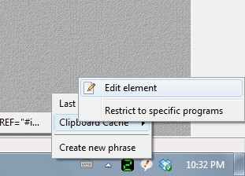
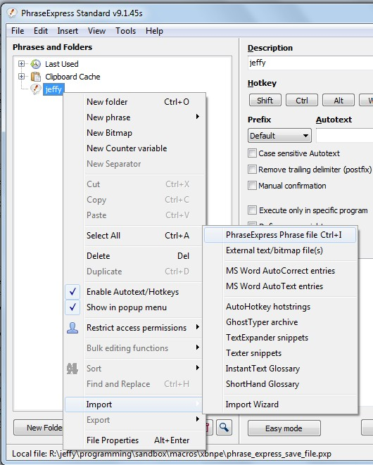
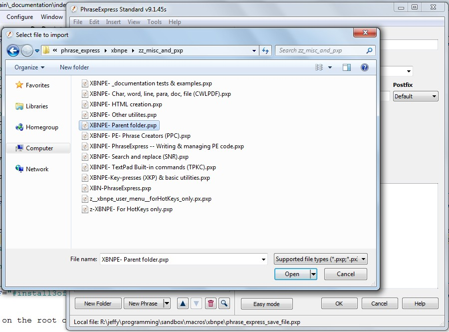
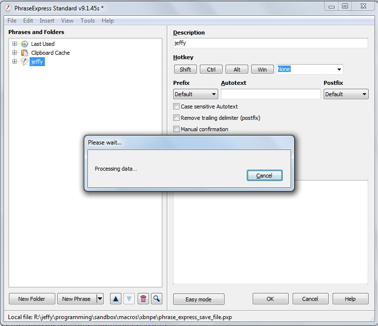
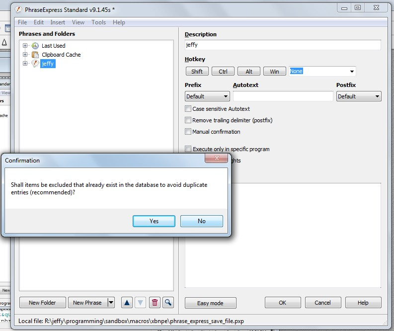
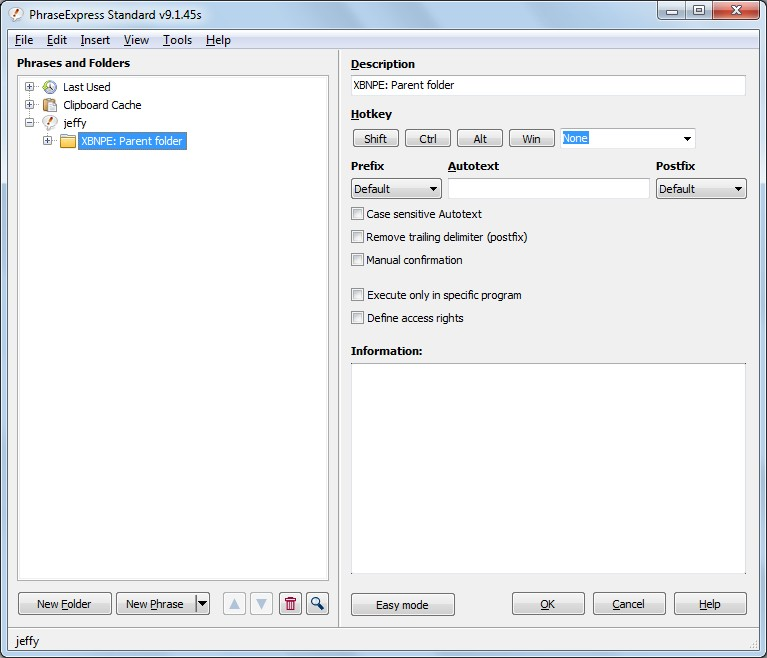

[BACK]
This section describes the specific steps necessary for installing XBN-PhraseExpress, up-through-and-including the XKP and TPKC projects.
top [PREV -- NEXT] XBN-PhraseExpress installation: Step-by-step7.0.9 from textpad.com.7.*.*.top [PREV -- NEXT] XBN-PhraseExpress installation: Step-by-stepIn TextPad, properly configure the Text Document Class, as required by XBN-PhraseExpress.The specific settings you make here are needed in a future step.
top [PREV -- NEXT] XBN-PhraseExpress installation: Step-by-stepv9.1.45s from phraseexpress.com.v9.*.*.top [PREV -- NEXT] XBN-PhraseExpress installation: Step-by-stepDownload XBN-PhraseExpress. Extract the download-archive into, for example:
C:\programming\phrase_express\
such that the root of the newly-extracted directory is
C:\programming\phrase_express\xbnpe\
Note that
C:\programming\phrase_express\
is called the XBNPE "parent" directory, and
C:\programming\phrase_express\xbnpe\
is called the XBNPE "root" directory.
Keep these values in mind for a future step.
The source-code for XBN-PhraseExpress is now properly installed.
top [PREV -- NEXT] XBN-PhraseExpress installation: Step-by-stepOpen the PhraseExpress application by clicking on the red exclamation point (inside a white "speech bubble"), right click on any item above "Create new phrase", then select "Edit element"

top [PREV -- NEXT] XBN-PhraseExpress installation: Step-by-stepRight-click on the root of your PhraseExpress heirachy (mine is named "jeffy"), and select
Import > PhraseExpress phrase file

top [PREV -- NEXT] XBN-PhraseExpress installation: Step-by-stepNavigate to to your XBNPE installation parent directory, such as
C:\programming\phrase_express\
then into the
xbnpe\zz_misc_and_pxp\
sub-directory, and select the XBN-PhraseExpress "parent" folder.

top [PREV -- NEXT] XBN-PhraseExpress installation: Step-by-stepOnce selected, the phrases will be imported.

top [PREV -- NEXT] XBN-PhraseExpress installation: Step-by-stepBefore it completes, you will be asked to import duplicate phrases or not. Press [Yes].
("Duplicate" is defined as "has the same phrase-name". While it is unlikely that there are duplicate phrases, this at least gives you the opportunity to choose between those duplicates during future execution. Eventually this allows you to resolve those conflicts, by either deleting a truly-duplicate phrase, or changing the name of a different phrase that happens to have the same name--along with all its phrase-calls.)

top [PREV -- NEXT] XBN-PhraseExpress installation: Step-by-stepAll XBN-PhraseExpress phrases are now in the PhraseExpress application. Proceed to the next step.

top [PREV -- NEXT] XBN-PhraseExpress installation: Step-by-stepXBN-PhraseExpress must be taught your XBNPE "parent" installation directory. This is done by setting the value of the
zROOT_DIR_XBNPE_MAIN
XBNPE global-directory-configuration-variable, and importing its phrase-file (replacing the old version).
It is strongly recommended that you edit these values in the on-disk text-files (plain-text phrase-files), and then import them. This is true when editing any values during this configuration process, and throughout much of the projects in XBN-PhraseExpress. Editing phrases directly in the PhraseExpress application, at least during this installation processes, is strongly discouraged.
top [PREV -- NEXT] XBN-PhraseExpress installation: Step-by-stepXBN-PhraseExpress must be taught two critical configuration settings in TextPad's Text Document Class, as determined in a previous step. These values must be set into the
zzTPTxtDefaultWordWrapOnOrESzzTPTxtDefaultStripTrailingWSOnOrESAt a bare minimum, XBN-PhraseExpress is now installed. Proceed to the next step to install the foundational XBNPE projects.
top [PREV -- NEXT] XBN-PhraseExpress installation: Step-by-stepThe XKP project is critical to almost everything in XBN-PhraseExpress.
Follow these instructions to install it:
To complete its installation, all of its TextPad-bootstraps (as listed at the bottom of the section) must be properly configured.
pex_in_textpad.html#tpbs